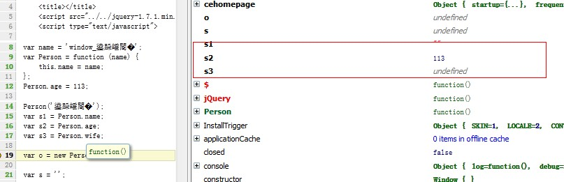

前言
之所以会有此篇文章当然还要从最近的一次面试说起，很抱歉居然又扯到面试上去看，其实不要说，平时不注意的东西，往往在面试时便会立马给你揪出来哪里有问题。
比如我当时就小小的栽了个跟头，栽跟头不要紧，要紧的是我确实对js的一些问题没有了解透彻。
俗话说的好，半灌水响叮当，我就那种一直认为自己js功底好的人，但真的拿出手来说，其实真的有点水了......此时再不好好学习一番，岂不是坐井观天，所以让我们开动吧！
小弟最近的文章基本都是边写边发，若是各位发现什么问题，或者感觉废话太多，请包涵。
闲扯作用域
你了解javascript的作用域吗？真的了解吗？那来试试这道题吧：
1 if (!("a" in window)) { 2 var a = 1; 3 } 4 alert(a);
好吧，拿出你的答案吧，吾已经露出了邪恶的笑容了，因为多数人看着这道题脑壳就有点昏（我会说我也有点昏吗？？？）
让我们一起来剥离她性感的外衣吧：
第一步："a" in window这是什么意思？
意思是a是window的属性吗？那我们来做个试验：
我那个去，你会发现不管注释var a 还是不注释，a都是window的属性......于是上面答案呼之欲出！！！但我一团浆糊在我们脑袋中膨胀扩散......
在js的变量作用域中有个原则：所有变量声明都在范围作用域的顶部！
所以，之前我犯了一个愚蠢的错误，错的连我也吃惊，所以我把我自己喝大家都忽悠了，注意陷阱：
其实刚刚上面的完整代码是这样的：
<script type="text/javascript"> // var a; var in_window = 'a' in window; alert(in_window); if (!("a" in window)) { var a = 1; } alert(a); </script>
这样的话：in_window自然是true，这才是隐藏的真相！！！
若是注释下面这些代码的话：
终于正确了，刚刚因为自己的一个错误差点颠覆我最近学习的东西，太可怕了！
现在我们来看看“所有变量申明都会在范围作用域的顶部”是什么意思。
意思是在最下面定义的变量会自动提到上面去啦！！！所以我们定义变量时不如直接全部定义上去算啦。
回到本题：
if (!("a" in window)) {
var a = 1;
}
alert(a);
其实他该是这个样子的。。。。
var a;
if (!("a" in window)) {
a = 1;
}
alert(a);
他将if里面的申明也提前了，怎么样不服气吧，其实我也是有点不服气，我想再试试：
var s = '';
if (false) {
var a = 1;
}
请注意，其中s没有任何意义，就是为了我方便设置断点：
至此真相出现，无论如何a的申明都会提前包括以下几种情况：
var s = '';
while (false) {
var a = 1;
}
变形一
学而不思则罔，我们将题目做个简单变形看看：
if (!("a" in window)) {
a = 1;
}
alert(a);
在if里面去掉了申明，这道题就该是“1”了，但是若是if里面的代码不被执行的话就会报错了哟；
变形2：碰上了函数
刚刚那个现在看来就相对简单了，现在我们看看如此如此这般这般又会如何（我承认我闲的蛋疼好了）？
if (!("a" in window)) {
var a = function () { window.a = 1; }
}
alert(a);
这样一改真的很蛋疼啦，这里不管a被定义为什么，但他是函数表达式，函数表达式就和原来一样，所以不变，if里面不会被执行！
那若是这个样子呢？
if (!("a" in window)) {
function a() { window.a = 1; }
}
alert(a);
这个场景其实我也傻了，那么设置个断点看看：
看来a并不在window中，所以会执行if中的代码；
这里却又引出了另一个问题：到底变量提前或者函数提前？
var a = '1';
function a(){}
alert(a);
function a() { }
var a = '1';
alert(a);
这两种写法会导致最后输出有所不同吗？？？
答案是不会，他们的的结果都是1，原因就是函数式申明更加被优先啦，所以无论怎么写函数式什么都在最前面！！
function a() {return false; }
if (a()) {
var a = '1';
}
s = '';
alert(a);
function a() {return true; }
if (a()) {
var a = '1';
}
s = '';
alert(a);
我们前面说过，无论如何，if里面的申明会提前，那么我们这两道题可以改写一下：
var a = function () { return true };
var a;
if (a()) {
a = '1';
}
s = '';
alert(a);

注意来：这里的10行，虽说申明了变量a却没有给其赋值，所以a还是函数，这从这里也可以看出来：
所以上面两个答案就没问题了，一个打印函数，一个打印数字1；
变形三
1 var a = 1, 2 b = function a(x) { x && b(--x); }; 3 alert(a);
现在我不运行代码试试是否可以解析，答案是不可以。。。我解析不出来，还是运行算了吧，我太水了！
这里涉及几个重要概念：
1 变量声明在进入执行上下文就完成了
2 函数声明也是提前的，所有的函数声明都在执行代码之前都已经完成了声明，和变量声明一样
3 函数声明会覆盖变量声明，但不会覆盖变量赋值，如我们上面看到的
想要理清问题，我还是老老实实一步步做工作吧：
根据规则三，这个结果是没有问题的，再看看下面的
从这里可以看出，若是注释了var a，这里function a()压根与它没什么事情，我们可以直接将之忽略（可能有误）
所以该题可以理解为：
var a = 1,
b = function (x) { x && b(--x); };
alert(a);
坑爹的我本来是想对js中的this做次研究的，没想到在作用域相关的东西上转了这么久，但是经过这次折腾我相信在这块地方我应该不会出问题了吧？？？
进入正题
通常情况下, this代表的是前面提到的Globle Object，也就是Browser环境时的window Object.
当function作为某一对象的 method 时, this 代表这个 function 所属的 object
其实这里有个原则“javascript中的this永远指向其函数拥有者”或者“this指针代表的是执行当前代码的对象的所有者”
说到javascript中的this就不能不提javascript中的函数，说到javascript中的函数就会涉及到闭包，我今天就以以下几个方面研究下javascript中的this：
1 一般情况下的this
2 对象调用中的this
3 函数调用中的this
4 页面dom事件对象中的this
5 大杂烩
正常情况下的this
正常情况下的this就是windows，我会乱说？
var a = 1;
alert(window.a);
申明a其实就在window上申明的，其实我各位说这些干嘛呢。。。。大家都知道呀，所以跳过算啦。
对象中的this
对象中的this情况相对复杂一点可能和我们后面的原型扯上关系，至于原因我们后面再说，先看看下面这个例子：
1 var person = { 2 name: '叶小钗', 3 getName: function () { 4 var scope = this; 5 alert(scope.name); 6 var s = ''//无实际意义，用于设置断点 7 } 8 }; 9 person.getName();

这个例子亦很平常，仿佛一切理所当然，当我拿出来说是想证明一件事情“this指向其函数拥有者”，这次拥有者为person所以打印叶小钗理所当然
我们简单做下变形：
1 var name = '素还真'; 2 function global_getName() { 3 var scope = this; 4 return scope.name; 5 var s = ''//无实际意义，用于设置断点 6 } 7 var person = { 8 name: '叶小钗', 9 getName: function () { 10 var scope = this; 11 return scope.name; 12 var s = ''//无实际意义，用于设置断点 13 } 14 }; 15 var s1 = global_getName(); 16 var s2 = person.getName(); 17 18 var s = '';
也没任何问题，好的我们再做一次变形：
var name = '素还真'; function global_getName() { var scope = this; return scope.name; var s = ''//无实际意义，用于设置断点 } var person = { name: '叶小钗', getName: global_getName }; var s1 = global_getName(); var s2 = person.getName(); var s = '';
我们看到getName被指向了global_getName，那我们再调用person.getName会不会有所不同呢？
当然不会了！我发现我自己被自己感动了，完全在说一些没意义的东西，所以下面这种情况是不可能骗到大家的，我就不绕弯子了：
var name = '素还真'; function global_getName() { var scope = this; return scope.name; var s = ''//无实际意义，用于设置断点 } var person = { name: '叶小钗', getName: global_getName }; var hehe = { name: '笑吧', getName: person.getName }; var s1 = global_getName();//素还真 var s2 = person.getName();//叶小钗 var s3 = hehe.getName(); //笑吧
函数中的this
要说函数的话，我先说说javascript中函数调用有四种方式和函数中this的相关东东：
1 方法调用模式：作为对象属性调用obj.func() 2 函数调用模式：指向全局，直接调用 func() 3 构造器调用模式：new方式调用，会隐式创建一个新对象其隐藏链接至函数prototype成员 4 call/apply调用模式：动态改变this指向的怪咖
函数代码中this值的第一个特性（同时也是最主要的特性）就是：它并非静态的绑定在函数上。
正如此前提到的，this的值是在进入执行上下文（Excution context）的阶段确定的，并且在函数代码中的话，其值每次都不尽相同。
然而，一旦进入执行代码阶段，其值就不能改变了。如果要想给this赋一个新的值是不可能的，因为在那时this根本就不是变量了。
对于函数中this的设定被认为是一个失误，但谁管他那么多呢。。。
现在回到正文，请看以下例子：
1 function func() { 2 var scope = this; 3 function s_func() { 4 var s_scope = this; 5 var s1 = scope; 6 var s2 = s_scope; 7 var s = ''; 8 } 9 s_func(); 10 } 11 this.func();
这里s1，s2都指向全局，这是为什么呢？我也不知道了，这里就去查询了下资料：
“ 函数上下文中this的值是函数调用者提供并且由当前调用表达式的形式而定的。如果在调用括号()的左边有引用类型的值，那么this的值就会设置为该引用类型值的base对象。 所有其他情况下（非引用类型），this的值总是null。然而，由于null对于this来说没有任何意义，因此会隐式转换为全局对象。“
”当调用括号的左边不是引用类型而是其它类型，这个值自动设置为null，结果为全局对象。“
——深入理解JavaScript系列（13）：This? Yes,this!
我们随便看一个变形：
1 var person = { 2 name: '叶小钗', 3 func: func 4 }; 5 function func() { 6 var scope = this; 7 function s_func() { 8 var s_scope = this; 9 var obj = {}; 10 obj.s1 = scope; 11 obj.s2 = s_scope; 12 return obj; 13 } 14 return s_func (); 15 } 16 17 var o = this.func(); 18 var o2 = person.func(); 19 var s = '';
这个应该比较好理解这边就不说了。
构造函数
以上说那么多绕过去绕过来的大家一定累了吧，好吧，开心点，我们看看下面这个东西，我想你心情会好起来的！！！
1 var name = 'window_叶小钗'; 2 var Person = function (name) { 3 this.name = name; 4 }; 5 6 Person('叶小钗'); 7 var s1 = Person.name; 8 var o = new Person(); 9 10 var s = '';
这是一段可怕的代码，Person('叶小钗')事实上改变不了任何事情，但从某种意义上来说Person也是对象，
所以他确确实实是存在name这个值的：

因为this.name是属于该对象的子对象的属性，若不实例化便休想染指
这个样子写又会有所不同，而且又产生了诡异的一幕：
var name = 'window_叶小钗'; var Person = function (name) { this.name = name; }; Person.name = name; Person.name1 = name; var o = new Person('叶小钗'); var s1 = Person.name; var s2 = Person.name1; var s3 = o.name; var s = '';
我们发现，由于Person中定义了this.name，外面无论怎么赋值都无效啦！
关于动态指定this的call/apply
每个函数都有一个方法call可以动态指定this指向，第一个参数便是this指向，不传或者null更具前面说的便是window，第二个参数为参数：
1 var name = 'window_叶小钗'; 2 function getName() { 3 return this.name; 4 } 5 var person = { name: '叶小钗' }; 6 var s1 = getName(); 7 var s2 = getName.call(); 8 var s3 = getName.call(null); 9 var s4 = getName.call(undefined); 10 var s5 = getName.call(person); 11 var s = '';
dom事件中的this
<div id="wl" onclick="test_this(this)"> 点击我试试</div> <script type="text/javascript"> function test_this(el) { var scope = this; var s = ''; } </script>
我们看到el是dom对象，this指向的是window，那么换个写法看看：
<div id="wl"> 点击我试试</div> <script type="text/javascript"> function test_this(e) { var scope = this; var s = ''; } document.getElementById('wl').onclick = test_this; </script>
这个样子，this指向的是dom对象，我们再试试：
<div id="wl"> 点击我试试</div> <script type="text/javascript"> function test_this(e) { var scope = this; var s = ''; } document.getElementById('wl').addEventListener('click', test_this, false); </script>
这样结果与上面相同。
检测学习成果的时间
现在，我感觉我对javascript中的this好像比较清楚了，是吗？？来大家一起来做两道题吧，大家记得独立做下哦：
作用域：
a = 2; var a = 1; alert(a);
(function () { baz = 5; var bar = 10; })(); alert(baz);
this：
确实想不到合适的了，各位园友给推荐两个呗。
结语
通过此次的研究学习，我感觉我对this的了解相对深入一点了，在后面工作中再注意总结一番，我相信我可以完全掌握this的特性！
小弟现在还很水，又是边写边发文，若是有不对或是理解有误的地方还请各位大侠提出来哟。
参考资料：
深入理解JavaScript系列（13）：This? Yes,this!
如果你觉得这篇文章还不错，请帮忙点击一下推荐，谢谢！
PS：小弟写了3个多小时，没有功劳也有苦劳，没有苦劳也有疲劳啊！！！若是各位觉得还能读，请猛击顶！！！他们说连续点会顶多次我不知道是不是呢？